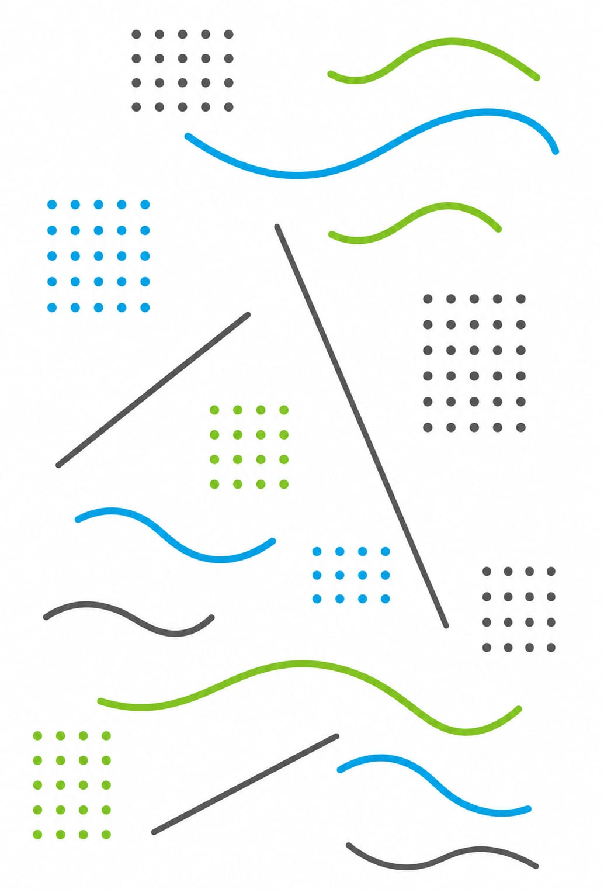

Ritmo propio
El susurro que nos mantiene en marcha
La respiración es ese sonido que casi nunca notamos porque siempre está ahí. Es como un susurro suave que va y viene; el aire entrando y saliendo de nosotros sin parar. Es lo más básico del mundo, pero si te detienes a escucharlo, es el ritmo más tranquilo y real que tenemos, el que nos acompaña en todo lo que hacemos.